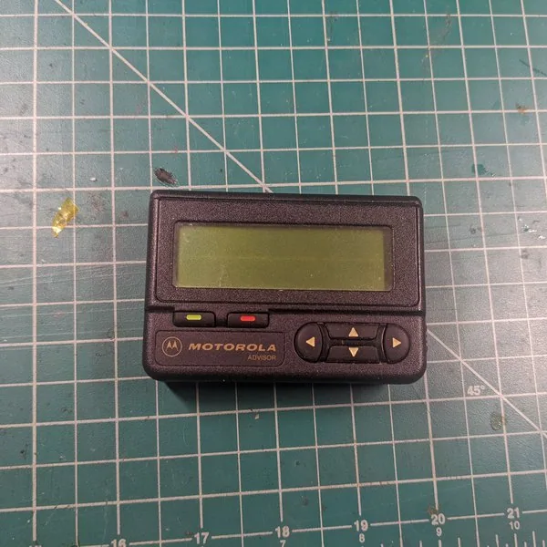

Motorola Advisor 寻呼机外壳改联网终端
- 作者拆解 Motorola Advisor，复用外壳、按键、蜂鸣器和振动电机，计划用 PyBoard、MicroPython 与替代 LCD 重建联网设备。

- 记录 L31
- 资料核查 2026-10-21
- 实机状态 KitAgain 未进行实机测试
- 0/5 个维度有可核验来源
- 现有核查状态只能支持文档与社区维度；其余维度未取证并保留为 null，因不足 3 个有证据维度而暂不评星。
是否值得继续
- 当前阶段 作者拆解 Motorola Advisor，复用外壳、按键、蜂鸣器和振动电机，计划用 PyBoard、MicroPython 与替代 LCD 重建联网设备。
- 现在能用到什么程度 可作为坚固寻呼机外壳和交互件的拆解参考，完整功能未确认。
- 用户价值 把难复用和可复用部件明确分开，减少盲目逆向。
- 继续跟进建议 有相同寻呼机且接受换屏换主板时继续；收藏完好设备不宜破坏。
适用设备与限制
已知可参考或可继续核查
- Motorola Advisor 外壳、按键、蜂鸣器和振动件
- MicroPython 小型通知终端实验
不能视为已支持
- 继续使用原 POCSAG 网络的通用方案
- 直接复用无资料原 LCD
缺口、下一步与风险
- 为什么仍是 E0 原 LCD 缺少资料而被替换；项目日志停在部件与设计阶段，未看到完整联网功能验收。
- 下一步核验 确认最终 PCB、显示器、AAA/锂电方案、固件和成品演示。
- 风险与停止条件 如果改用锂电池，必须增加合适的充电、过流和结构保护。
链接里分别有什么
- 拆解与设计日志 ↗project-log记录原 LCD 难点、按键、蜂鸣器、振动、电源和 PyBoard 选择。https://hackaday.io/project/183837-motorola-advisor-connected-device